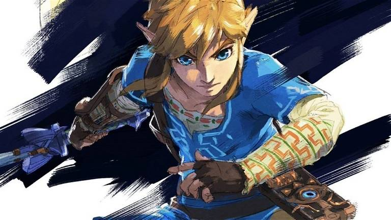

Link
Link es el protagonista principal del juego. Es el portador de la Espada Maestra y se embarca en una épica aventura para derrotar a Ganon y salvar a Hyrule.

Zelda
La Princesa Zelda es una figura central en la historia. Posee el poder de la diosa Hylia y juega un papel crucial en la lucha contra Ganon.

Mipha
Mipha es una de las cuatro campeonas y la princesa de los Zora. Controla el Dominio de la Vah Ruta y desempeña un papel vital en la historia.

Urbosa
Urbosa es la campeona Gerudo y controla el Dominio de la Vah Naboris. Su valentía y habilidades son esenciales para la lucha contra Ganon.

Daruk
Daruk, el Goron campeón, controla el Dominio de la Vah Rudania. Su fortaleza y determinación son clave en la batalla contra la calamidad.

Revali
Revali es el campeón de los Rito y controla el Dominio de la Vah Medoh. Sus habilidades con el arco son esenciales para la defensa de Hyrule.